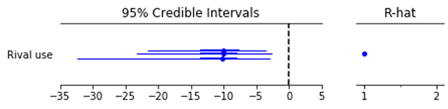
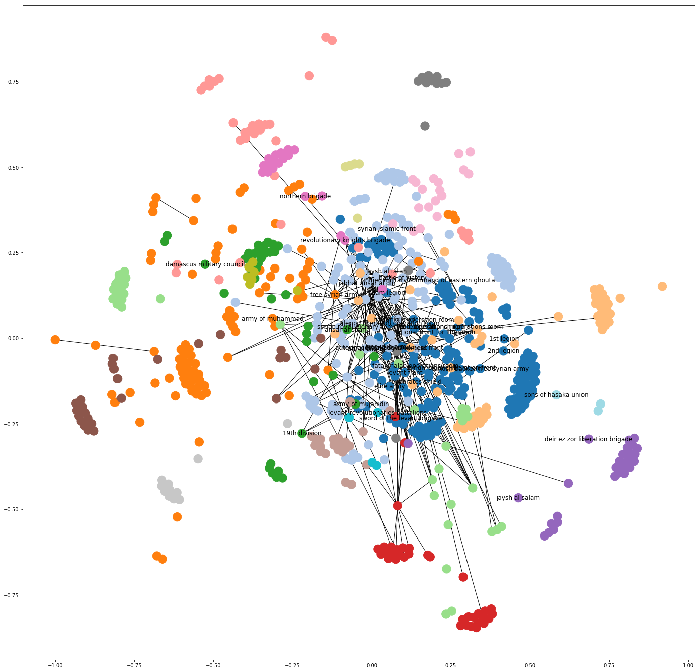
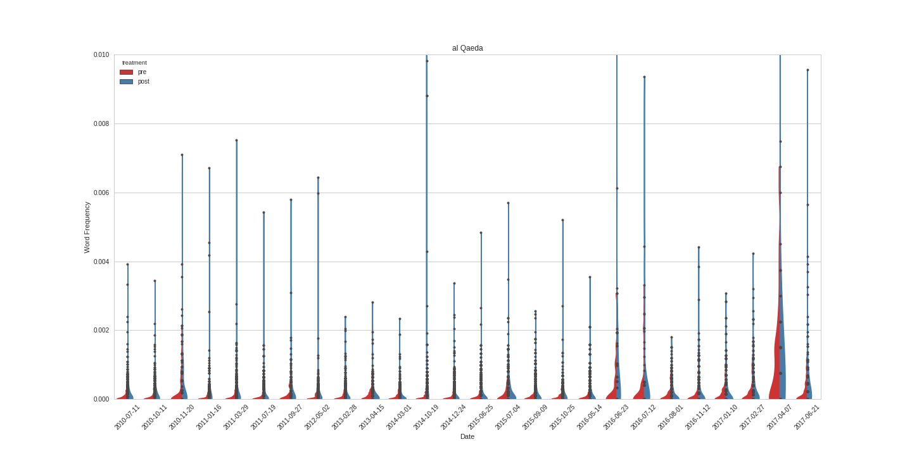

class: center, middle background-color: white .title[Devils in the Details:] .subtitle[Learning and Diffusion in Networks of Violent Groups] .author[Laila A. Wahedi, PhD] .date[July 12, 2018] .institution[McCourt School of Public Policy, Georgetown University] <img style="width:20%" src="../figures/seal.png"> .center[] .footnote[Created with [{Remark.js}](http://remarkjs.com/) using [{Markdown}](https://daringfireball.net/projects/markdown/) + [{MathJax}](https://www.mathjax.org/) + [{Liminal}](http://www.jmlilly.net/liminal.zip)] --- class: center background-color: .footnote[ Laila A. Wahedi -- Follow along at Wahedi.US, under Current Presentation -- law98@georgetown.edu] # What are violent groups going to do next? -- .left-column[ <div style="width:100%; float:left; background-color:#AF002B; border:3px; border-style:solid; border-color: black;"> <h3 style = "color:white"> What they <i><b>want</i></b> to do </h3> </div> ] -- .right-column[ <div style="width:100%; height:100%; float:left; background-color:#01BAEF; border:3px; border-style:solid; border-color: black;"> <h3 style = "color:white"> What they <i><b>can</i></b> do </h3> </div> ] --- class: center background-color:#AF002B .footnote[ Laila A. Wahedi -- Follow along at Wahedi.US, under Current Presentation -- law98@georgetown.edu] <h2 style="text-transform: none; color:white; text-align:left; margin-bottom:0px">What they <b><i>want</b></i> to do: </h2> <img class="plain" src="../figures/line.png" style="float:left; padding:0;margins:0;margin-bottom:0px; align:left; height: 5px; width:75%"> <div style="width:32%; float:left"> <img style="width:75%" src="../figures/diffusion/want1.png"> <h3 style="color:white;">Threat from Security Forces</h3> </div> <div style="width:32%; float:left"> <img style="width:75%" src="../figures/diffusion/want2.png"> <h3 style="color:white;">Security Forces Learn</h3> </div> <div style="width:32%; float:left"> <img style="width:75%" src="../figures/diffusion/want3.png"> <h3 style="color:white;">Adapt to Survive</h3> </div> </div> --- class: center background-color:#01BAEF .footnote[ Laila A. Wahedi -- Follow along at Wahedi.US, under Current Presentation -- law98@georgetown.edu] <h2 style="text-transform: none; color:white; margin-bottom:0px; text-align:left; ">What they <b><i>can</b></i> do: </h2> <img class="plain" src="../figures/line.png" style="padding:0;margins:0;margin-bottom:0px; float:left; height: 5px; width:75%"> <div style="width:32%; float:left"> <img style="width:75%" src="../figures/diffusion/can1.png"> <h3 style = "color:white; ">Mistakes Are Dangerous</h3> </div> <div style="width:32%; float:left"> <img style="width:75%" src="../figures/diffusion/can2.png"> <h3 style = "color:white; ">Sharing is Risky</h3> </div> <div style="width:32%; float:left"> <img style="width:75%" src="../figures/diffusion/can3.png"> <h3 style = "color:white; ">Learning Is Hard</h3> </div> --- class: center, background-color: #F2DC5D .footnote[ Laila A. Wahedi -- Follow along at Wahedi.US, under Current Presentation -- law98@georgetown.edu] <h2 style="text-transform: none; text-align:left; margin-bottom:0px">Groups need to adapt...</h2> <h2 style="text-transform: none; text-align: right; margin-bottom:0px">But learning is hard...</h2> <h1 style="text-transform: none; margin-bottom:0px">How do violent groups learn their craft?</h1> -- background-color: #9BC53D <img class="plain" src="../figures/line.png" style="padding:0;margins:0;margin-bottom:0px; height: 5px; width:75%"> <h1 style="text-transform: none; margin-bottom:0px">Groups mitigate risk of adoption by learning from <b><i>trusted parters </i></b></h1> --- class: center, background-color: #F2DC5D .footnote[ Laila A. Wahedi -- Follow along at Wahedi.US, under Current Presentation -- law98@georgetown.edu] <h2 style="text-transform: none; text-align:left; margin-bottom:0px">Empirical Implications:</h2> <img class="plain" src="../figures/line.png" style="float:left; padding:0;margins:0;margin-bottom:0px; height: 5px; width:75%"> <h2 style="text-transform: none; text-align: left;">If groups learn from their partners, expect: </h2> <h1>The probability of a group <i>adopting</i> a given tactic should <u><i>increase </u></i> if a group has a <i><b>trusted partner using </i></b>the tactic. </h1> --- class: center, background-image: url(../figures/seg_arch1.png) .footnote[ Laila A. Wahedi -- Follow along at Wahedi.US, under Current Presentation -- law98@georgetown.edu] <h2 style="text-transform: none; text-align:left; margin-bottom:0px">Empirical Building Blocks: Data</h2> <img class="plain" src="../figures/line.png" style="float:left; padding:0;margins:0;margin-bottom:0px; height: 5px; width:75%"> <p> </p> <h2> Big Allied And Dangerous I</h2> <h4> Cooperative Partnerships</h4> <h4> Rivalries </h4> <h4> Group-level covariates</h4> <h4> Time-static</h4> --- class: center, background-image: url(../figures/seg_arch2.png) .footnote[ Laila A. Wahedi -- Follow along at Wahedi.US, under Current Presentation -- law98@georgetown.edu] <h2 style="text-transform: none; text-align:left; margin-bottom:0px">Empirical Building Blocks: Data</h2> <img class="plain" src="../figures/line.png" style="float:left; padding:0;margins:0;margin-bottom:0px; height: 5px; width:75%"> <p> </p> <h2> Terrorism Knowledge Base</h2> <h4> Attack Event Data</h4> <h4> Tactical Information</h4> <h4> Event-level covariates</h4> --- class: center, background-image: url(../figures/seg_arch3.png) .footnote[ Laila A. Wahedi -- Follow along at Wahedi.US, under Current Presentation -- law98@georgetown.edu] <h2 style="text-transform: none; text-align:left; margin-bottom:0px">Empirical Building Blocks: Data</h2> <img class="plain" src="../figures/line.png" style="float:left; padding:0;margins:0;margin-bottom:0px; height: 5px; width:75%"> <p> </p> <h2> All Together</h2> <h3> Whether a partner has <br> used a tactic in <br>the past three years</h3> --- class: center, background-image: url(../figures/seg_arch4.png) .footnote[ Laila A. Wahedi -- Follow along at Wahedi.US, under Current Presentation -- law98@georgetown.edu] <h2 style="text-transform: none; text-align:left; margin-bottom:0px">Empirical Building Blocks: Unpooled</h2> <img class="plain" src="../figures/line.png" style="float:left; padding:0;margins:0;margin-bottom:0px; height: 5px; width:75%"> <p> </p> <h3>Probability of adopting<br> a given tactic increases <br>when partners use the tactic in:</h3> <h1> 16/17 tactics</h1> <h1> 11/17 tactics significant</h1> <h3>Small n, multiple tests</h3> --- class: center, background-image: url(../figures/seg_arch5.png) <h2 style="text-transform: none; text-align:left; margin-bottom:0px">Empirical Building Blocks: Pooled</h2> <img class="plain" src="../figures/line.png" style="float:left; padding:0;margins:0;margin-bottom:0px; height: 5px; width:75%"> <p> </p> <img src='../figures/surv_trans.png' style="width:50%"> <h3 style = "margin-bottom:0px">.3 increase in P(adoption) when partners use it</h3> <h4 style = "margin-top:0px"> Multiple dependent observations</h4> --- class: center, background-image: url(../figures/seg_arch6.png) .footnote[ Laila A. Wahedi -- Follow along at Wahedi.US, under Current Presentation -- law98@georgetown.edu] <h2 style="text-transform: none; text-align:left; margin-bottom:0px">Keystone: Hierarchical TNAM</h2> <img class="plain" src="../figures/line.png" style="float:left; padding:0;margins:0;margin-bottom:0px; height: 5px; width:75%"> <p> </p> <img src="../figures/eq-trans.png" style="width:75%"> --- class: center, .footnote[ Laila A. Wahedi -- Follow along at Wahedi.US, under Current Presentation -- law98@georgetown.edu] <h2 style="text-transform: none; text-align:left; margin-bottom:0px">Results</h2> <img class="plain" src="../figures/line.png" style="float:left; padding:0;margins:0;margin-bottom:0px; height: 5px; width:75%"> <img src="../figures/tactic_effects1.png" style="height:85%"> --- class: center, background-color: #F2DC5D .footnote[ Laila A. Wahedi -- Follow along at Wahedi.US, under Current Presentation -- law98@georgetown.edu] <h2 style="text-transform: none; text-align:left; margin-bottom:0px">Empirical Implications:</h2> <img class="plain" src="../figures/line.png" style="float:left; padding:0;margins:0;margin-bottom:0px; height: 5px; width:75%"> <h2 style="text-transform: none; text-align: left;">If groups learn from their partners <strong>rather than observation,</strong> expect: </h2> <h1>The probability of a group <i>adopting</i> a given tactic should <u><i>not </u></i> increase when rivals use that tactic</h1> --- class: center, .footnote[ Laila A. Wahedi -- Follow along at Wahedi.US, under Current Presentation -- law98@georgetown.edu] <h2 style="text-transform: none; text-align:left; margin-bottom:0px">Results</h2> <img class="plain" src="../figures/line.png" style="float:left; padding:0;margins:0;margin-bottom:0px; height: 5px; width:75%">  --- class: center, background-color: #F2DC5D .footnote[ Laila A. Wahedi -- Follow along at Wahedi.US, under Current Presentation -- law98@georgetown.edu] <h2 style="text-transform: none; text-align:left; margin-bottom:0px">Empirical Implications:</h2> <img class="plain" src="../figures/line.png" style="float:left; padding:0;margins:0;margin-bottom:0px; height: 5px; width:75%"> <h2 style="text-transform: none; text-align: left;">If groups learn from their partners <strong>rather than observation,</strong> expect: </h2> <h1>The probability of a group <i>adopting</i> a given tactic should <u><i>increase </u></i> when embedded in a network structure that facilitates trust and coordination</h1> --- class: center, .footnote[ Laila A. Wahedi -- Follow along at Wahedi.US, under Current Presentation -- law98@georgetown.edu] <h2 style="text-transform: none; text-align:left; margin-bottom:0px">Results</h2> <img class="plain" src="../figures/line.png" style="float:left; padding:0;margins:0;margin-bottom:0px; height: 5px; width:75%"> <img src="../figures/tactic_effects_cent.png" style="width:100%"> --- class: center # Beyond Tactics <img style="width:70%" src="../figures/aq_is.png"> ## Endogenous Process of network effects and formation .footnote[ Follow along at Wahedi.US, under Current Presentation Laila A. Wahedi, PhD -- @lwahedi -- law98@georgetown.edu] --- class: center background-color: .footnote[ Laila A. Wahedi -- Follow along at Wahedi.US, under Current Presentation -- law98@georgetown.edu] <h2 style="text-transform: none; margin-bottom:0px; text-align:left; "><img src="../figures/structure/decent.png">Decentralized:</h2> <img class="plain" src="../figures/line.png" style="padding:0;margins:0;margin-bottom:0px; float:left; height: 5px; width:75%"> </div> <div style="background-color:#01BAEF; height:40%;float:top"> <div style="width:33%; float:left"> <img style="height:75%" src="../figures/structure/redundant.png"> <h3 style="color:white;">Redundant Paths: </h3> </div> <div style="width:33%; float:left"> <img style="height:75%" src="../figures/structure/autonomy.png"> <h3 style="color:white;">Autonomy</h3> </div> <div style="width:33%; float:left"> <img style="height:75%" src="../figures/structure/target.png"> <h3 style="color:white;">Robust to Random Removal</h3> </div> </div> <div style="background-color:#AF002B; height:40%;float:top"> <div style="width:33%; float:left"> <img style="max-width:75%" src="../figures/structure/lost.png"> <h3 style="color:white;">Inefficient</h3> </div> <div style="width:33%; float:left"> <img style="" src="../figures/structure/lazy.png"> <h3 style="color:white;">Free Riding</h3> </div> <div style="width:33%; float:left"> <img style="height:75%" src="../figures/structure/yarn.png"> <h3 style="color:white;">Vulnerable to Unraveling</h3> </div> </div> --- class: center background-color: .footnote[ Laila A. Wahedi -- Follow along at Wahedi.US, under Current Presentation -- law98@georgetown.edu] <h2 style="text-transform: none; margin-bottom:0px; text-align:left; "> <img style="max-height:2.5em" src="../figures/structure/cent.png">Centralized:</h2> <img class="plain" src="../figures/line.png" style="padding:0;margins:0;margin-bottom:0px; float:left; height: 5px; width:75%"> </div> <div style="background-color:#01BAEF; height:40%;float:top"> <div style="width:33%; float:left"> <img style="height:75%" src="../figures/structure/shortcut.png"> <h3 style="color:white;">Information Shortcuts </h3> </div> <div style="width:33%; float:left"> <img style="height:75%" src="../figures/structure/save-time.png"> <h3 style="color:white;">Efficient</h3> </div> <div style="width:33%; float:left"> <img style="height:75%" src="../figures/structure/target.png"> <h3 style="color:white;">Robust to Random Removal</h3> </div> </div> <div style="background-color:#AF002B; height:40%;float:top"> <div style="width:33%; float:left"> <img style="max-width:75%" src="../figures/structure/overwhelm.png"> <h3 style="color:white;">Costly for Center</h3> </div> <div style="width:33%; float:left"> <img style="" src="../figures/structure/freedom.png"> <h3 style="color:white;">Periphery Loses Freedom</h3> </div> <div style="width:33%; float:left"> <img style="height:75%" src="../figures/structure/one_target.png"> <h3 style="color:white;">Vulnerable to Targeted Removal</h3> </div> </div> --- class: center background-color: .footnote[ Laila A. Wahedi -- Follow along at Wahedi.US, under Current Presentation -- law98@georgetown.edu] <h2 style="text-transform: none; margin-bottom:0px; text-align:left; "> <img style="max-height:2.5em" src="../figures/structure/cent.png">Centralized:</h2> <img class="plain" src="../figures/line.png" style="padding:0;margins:0;margin-bottom:0px; float:left; height: 5px; width:75%"> </div> <div style="background-color:#01BAEF; height:40%;float:top"> <div style="width:33%; float:left"> <img style="height:75%" src="../figures/structure/shortcut.png"> <h3 style="color:white;">Information Shortcuts </h3> </div> <div style="width:33%; float:left"> <img style="height:75%" src="../figures/structure/save-time.png"> <h3 style="color:white;">Efficient</h3> </div> <div style="width:33%; float:left"> <img style="height:75%" src="../figures/structure/target.png"> <h3 style="color:white;">Robust to Random Removal</h3> </div> </div> <div style=" height:40%;float:top"> <div style="width:33%; height:100%; float:left; background-color:#01BAEF;"> <img style="max-width:75%" src="../figures/structure/Xoverwhelm.png"> <h3 style="color:white;">Specialization</h3> </div> <div style="width:33%; height:100%; float:left; background-color:#AF002B;"> <img style="max-height:75%" src="../figures/structure/freedom.png"> <h3 style="color:white;">Periphery Loses Freedom</h3> </div> <div style="width:33%; height:100%; float:left; background-color:#AF002B;"> <img style="max-height:75%" src="../figures/structure/one_target.png"> <h3 style="color:white;">Vulnerable to Targeted Removal</h3> </div> </div> --- class: center background-color: .footnote[ Laila A. Wahedi -- Follow along at Wahedi.US, under Current Presentation -- law98@georgetown.edu] <h2 style="text-transform: none; margin-bottom:0px; text-align:left; "> <img style="max-height:2.5em" src="../figures/structure/cent.png">Centralized:</h2> <img class="plain" src="../figures/line.png" style="padding:0;margins:0;margin-bottom:0px; float:left; height: 5px; width:75%"> </div> <div style="background-color:#01BAEF; height:40%;float:top"> <div style="width:33%; float:left"> <img style="height:75%" src="../figures/structure/shortcut.png"> <h3 style="color:white;">Information Shortcuts </h3> </div> <div style="width:33%; float:left"> <img style="height:75%" src="../figures/structure/save-time.png"> <h3 style="color:white;">Efficient</h3> </div> <div style="width:33%; float:left"> <img style="height:75%" src="../figures/structure/target.png"> <h3 style="color:white;">Robust to Random Removal</h3> </div> </div> <div style="height:40%;float:top"> <div style="width:33%; height:100%; float:left; background-color:#01BAEF;"> <img style="max-width:75%" src="../figures/structure/Xoverwhelm.png"> <h3 style="color:white;">Specialization</h3> </div> <div style="width:33%; height:100%; float:left; background-color:#01BAEF;"> <img style="" src="../figures/structure/Xfreedom.png"> <h3 style="color:white;">Periphery Trades For Efficiency</h3> </div> <div style="width:33%; height:100%; float:left; background-color:#AF002B;"> <img style="max-height:75%" src="../figures/structure/one_target.png"> <h3 style="color:white;">Vulnerable to Targeted Removal</h3> </div> </div> --- class: center background-color: .footnote[ Laila A. Wahedi -- Follow along at Wahedi.US, under Current Presentation -- law98@georgetown.edu] <h2 style="text-transform: none; margin-bottom:0px; text-align:left; "> <img style="max-height:2.5em" src="../figures/structure/cent.png">Centralized:</h2> <img class="plain" src="../figures/line.png" style="padding:0;margins:0;margin-bottom:0px; float:left; height: 5px; width:75%"> </div> <div style="background-color:#01BAEF; height:40%;float:top"> <div style="width:33%; float:left"> <img style="height:75%" src="../figures/structure/shortcut.png"> <h3 style="color:white;">Information Shortcuts </h3> </div> <div style="width:33%; float:left"> <img style="height:75%" src="../figures/structure/save-time.png"> <h3 style="color:white;">Efficient</h3> </div> <div style="width:33%; float:left"> <img style="height:75%" src="../figures/structure/target.png"> <h3 style="color:white;">Robust to Random Removal</h3> </div> </div> <div style="background-color:#01BAEF; height:40%;float:top"> <div style="width:33%; height:100%; float:left;"> <img style="max-width:75%" src="../figures/structure/Xoverwhelm.png"> <h3 style="color:white;">Specialization</h3> </div> <div style="width:33%; height:100%; float:left; ;"> <img style="" src="../figures/structure/Xfreedom.png"> <h3 style="color:white;">Periphery Trades For Efficiency</h3> </div> <div style="width:33%; float:left"> <img style="height:75%" src="../figures/structure/Xone_target.png"> <h3 style="color:white;">Evolves Around Strong Core</h3> </div> </div> --- class: center, .footnote[ Laila A. Wahedi -- Follow along at Wahedi.US, under Current Presentation -- law98@georgetown.edu] <h2 style="text-transform: none; text-align:left; margin-bottom:0px">Results</h2> <img class="plain" src="../figures/line.png" style="float:left; padding:0;margins:0;margin-bottom:0px; height: 5px; width:75%"> <img src="../figures/structure/results1.png" style="width:90%"> <h3>Groups in centralized local networks kill more people, and conduct more attacks </h3> * Controlling for how well connected the group is * Controlling for the size of the network --- class: center background-color:#FAFF75 .footnote[Follow along at Wahedi.US, under Current Presentation Laila A. Wahedi, PhD -- @lwahedi -- law98@georgetown.edu] <h2 style="text-transform: none; text-align:left; margin-bottom:0px">When do local groups join global movements?</h2> <img class="plain" src="../figures/line.png" style="float:left; padding:0;margins:0;margin-bottom:0px; align:left; height: 5px; width:75%"> <div> <div style="width:50%; float:left;background-color:#01BAEF">  <h3 style="color:white;">Global Actors</h3> </div> <div style="width:50%; float:left;background-color:#AF002B"> <img style="width:75%" src="../figures/bipolarity/local.png"> <h3 style="color:white;">Local Actors</h3> </div> </div> ## When they have no other choice. --- class: center background-color:#FAFF75 .footnote[Follow along at Wahedi.US, under Current Presentation Laila A. Wahedi, PhD -- @lwahedi -- law98@georgetown.edu] <h2 style="text-transform: none; text-align:left; margin-bottom:0px">How does competition impact these global networks?</h2> <img class="plain" src="../figures/line.png" style="float:left; padding:0;margins:0;margin-bottom:0px; align:left; height: 5px; width:75%"> <div> <div style="width:50%; float:left;background-color:#01BAEF">  <h3 style="color:white;">Global Actors</h3> </div> <div style="width:50%;height:100%; float:left;background-color:#AF002B">  <h3 style="color:white;">Local Actors</h3> </div> </div> --- class: center background-color:#FAFF75 .footnote[Follow along at Wahedi.US, under Current Presentation Laila A. Wahedi, PhD -- @lwahedi -- law98@georgetown.edu] <h2 style="text-transform: none; text-align:left; margin-bottom:0px">How do power and ideology interact to shape network evolution?</h2> <img class="plain" src="../figures/line.png" style="float:left; padding:0;margins:0;margin-bottom:0px; align:left; height: 5px; width:75%"> <div> <div style="width:50%; float:left;background-color:#01BAEF"> <img style="width:75%" src="../figures/syria/cooperative_net.png"> <h3 style="color:white;">Cooperative Network</h3> </div> <div style="width:50%;height:100%; float:left;background-color:#AF002B">  <h3 style="color:white;">Rivalry Network</h3> </div> </div> ## Constructing new network data from Syrian Civil War --- class: center background-color:#FAFF75 .footnote[Follow along at Wahedi.US, under Current Presentation Laila A. Wahedi, PhD -- @lwahedi -- law98@georgetown.edu] <h2 style="text-transform: none; text-align:left; margin-bottom:0px">How do you even measuring soft power</h2> <img class="plain" src="../figures/line.png" style="float:left; padding:0;margins:0;margin-bottom:0px; align:left; height: 5px; width:75%"> <div> <div style="width:100%; float:left;background-color: AF002B">  <h3 style="color:black;">Al Qaeda Influence</h3> </div> </div> ### By tracking diffusion of topics from official statements to discussions on social media --- class: center, .footnote[ Laila A. Wahedi -- Follow along at Wahedi.US, under Current Presentation -- law98@georgetown.edu] <h2 style="text-transform: none; text-align:left; margin-bottom:0px">Backup</h2> <img class="plain" src="../figures/line.png" style="float:left; padding:0;margins:0;margin-bottom:0px; height: 5px; width:75%"> --- class: center, .footnote[ Laila A. Wahedi -- Follow along at Wahedi.US, under Current Presentation -- law98@georgetown.edu] <h2 style="text-transform: none; text-align:left; margin-bottom:0px">Centralization</h2> <img class="plain" src="../figures/line.png" style="float:left; padding:0;margins:0;margin-bottom:0px; height: 5px; width:75%"> <img src="../figures/structure/netcent.png" style="height:70%"> --- class: center, .footnote[ Laila A. Wahedi -- Follow along at Wahedi.US, under Current Presentation -- law98@georgetown.edu] <h2 style="text-transform: none; text-align:left; margin-bottom:0px">Eigenvector Centrality</h2> <img class="plain" src="../figures/line.png" style="float:left; padding:0;margins:0;margin-bottom:0px; height: 5px; width:75%"> <img src="../figures/structure/eig.png" style="height:70%"> --- class: center, .footnote[ Laila A. Wahedi -- Follow along at Wahedi.US, under Current Presentation -- law98@georgetown.edu] <h2 style="text-transform: none; text-align:left; margin-bottom:0px">Lethality</h2> <img class="plain" src="../figures/line.png" style="float:left; padding:0;margins:0;margin-bottom:0px; height: 5px; width:75%"> <img src="../figures/structure/leth.png" style="height:70%"> --- class: center, .footnote[ Laila A. Wahedi -- Follow along at Wahedi.US, under Current Presentation -- law98@georgetown.edu] <h2 style="text-transform: none; text-align:left; margin-bottom:0px">Structure Interaction Results</h2> <img class="plain" src="../figures/line.png" style="float:left; padding:0;margins:0;margin-bottom:0px; height: 5px; width:75%"> <img src="../figures/structure/results2.png" style="width:90%"> <h3>Groups in centralized local networks kill more people, and conduct more attacks </h3> * Controlling for how well connected the group is * Controlling for the size of the network *Effect is additive not multiplicative. No interaction ---